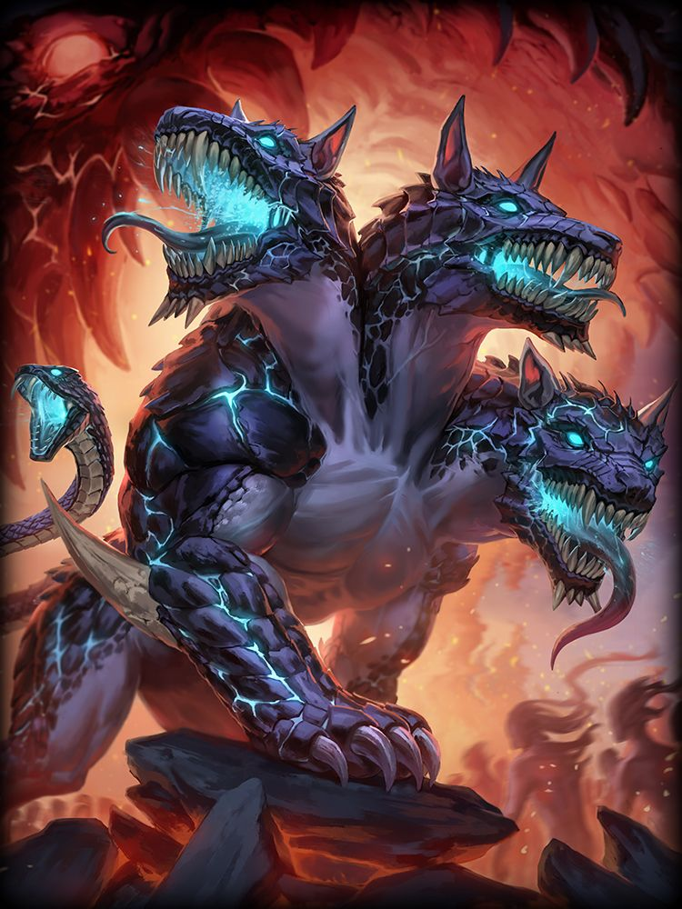

En la mitología griega, Cerbero era el perro de Hades, un monstruo de tres cabezas, con una serpiente en lugar de cola.
Cerbero guardaba la puerta del reino de Hades (el inframundo griego) y aseguraba que los muertos no salieran y que los vivos no pudieran entrar.

El último de los doce trabajos de Hercules fue capturar a Cerbero.